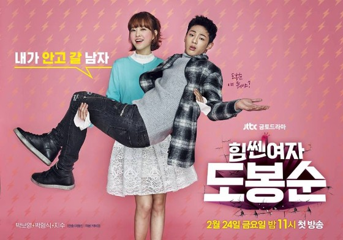

Korea Series
แนะนำซีรี่ย์เกาหลีที่น่าสนใจ

Tomorrow With You
Strong Woman
The Legend of the Blue Sea
The Heirs
Healer
กลับหน้าหลัก
U.S.A. Series
แนะนำซีรี่ย์ฝรั่งที่น่าสนใจ

Marvel’s Agents of S.H.I.E.L.D
Season 1

Marvel’s Agents of S.H.I.E.L.D
Season 2
Marvel’s Agents of S.H.I.E.L.D
Season 3

Marvel’s Agents of S.H.I.E.L.D
Season 4

Teen Wolf
TEEN WOLF

THE VAMPIRE DIARIES
THE VAMPIRE DIARIES SEASON 2
Ghost Movies
แนะนำหนังผีน่าดู
-

THE CONJURING 2 (2016)
คนเรียกผี 2
เรื่องย่อ The Conjuring 2 นำแสดงโดย เวร่า ฟาร์มิก้า และแพทริค วิลสัน สองนักแสดงกลับมารับบทเป็น นักปีศาจวิทยาคู่สามีภรรยา เอ็ดและลอเรน วอร์เรน ร่วมด้วย ฟรานเชส โอ’คอนนอร์ (ภาพยนตร์ทางทีวี “The Missing”) ผู้รับบทคุณแม่เลี้ยงเดี่ยว ร่วมกับเมดิสัน วูล์ฟ (ภาพยนตร์ทางทีวี “Zoo”) และนักแสดงหน้าใหม่ลอว์เรน เอสโพซิโต, แพทริค แม็คออเลย์ และ เบนจามิน เฮห์ รับบทลูกๆ ของเธอ มาเรีย ดอยล์ เคนเนดี้ อำนวยการสร้างโดย ปีเตอร์ ซาฟราน ,ร็อบ โคแวน , วอลเตอร์ ฮามาดา และเดฟ นูสแตดเตอร์ กำกับการแสดงโดย เจมส์ วาน
-
TAKE ME HOME (2016)
สุขสันต์วันกลับบ้าน
ชายหนุ่มที่ความจำเสื่อมจากการประสบอุบัติเหตุ และไม่สามารถจำอะไรได้เลยนอกจากชื่อของตัวเอง แทน พยายามหาข้อมูลมาตลอดว่า เขาคือใคร และครอบครัวเขาอยู่ที่ไหน จนวันหนึ่งเขาได้พบหลักฐานบางอย่างซึ่งจะนำพา แทน กลับบ้านอันแสนสุขของเขาอีกครั้ง ในบ้านหลังนี้ แทน ได้พบกับ ทับทิม (วรรณรท สนธิไชย) พี่สาวฝาแฝดของ แทน ที่แต่งงานอยู่กินกับ ชีวิน (ปีเตอร์ นพชัย) พ่อหม้ายลูกสอง พร้อมด้วย แวว (นภาดา สุขกิจ) แม่บ้านผู้เลี้ยงดูแทนมาตั้งแต่เด็ก โดย แทน ต้องเริ่มต้นครั้งใหม่ในการทำความรู้จักกับครอบครัวของเขา! “แน่ใจหรือว่า…มีคนรอคุณอยู่ที่บ้าน” บ้านหลังนี้เก็บความลับบางอย่างไว้ และบ้านหลังนี้น่ากลัวที่สุดเท่าที่คุณเคยกลับบ้าน
-
SEE HOW THEY RUN
โกยเถอะโยม
เรื่องย่อ โกยเถอะโยม เรื่องราวเกี่ยวกับผีเด็กเร่ร่อน (น้องพี มกจ๊ก) ที่ต้องการตามหาพ่อซึ่งไม่เคยพบหน้ากันมาก่อน แต่ด้วยความเหงาและอยากมีเพื่อน ผีเด็กจึงชอบปรากฏตัวให้ผู้คนได้เห็นอย่างซุกซน ซึ่งในการปรากฏตัวทุกครั้งได้สร้างความอลหม่านวุ่นวายและความหวาดกลัวให้กับชาวบ้าน จนชาวบ้านทุกคนต้องรวมพลคนกลัวผีขึ้นมาและแห่กันไปพึ่ง
-
PEEMAK
พี่มากพระโขนง
ในสมัย กรุงรัตนโกสินทร์ตอนต้น เกิดสงครามจนทำให้ชาวบ้านจำนวนมากต้องถูกเกณฑ์ไปรบ “พี่มาก”จำต้องทิ้งเมียของเขาที่กำลังท้องแก่ไว้ที่บ้านเพื่อเข้าร่วมศึก ระหว่างสงคราม มากได้พบและช่วยชีวิตเพื่อนทหารเกณฑ์สี่คนคือ เต๋อ เผือก ชิน และเอ จนท้ายที่สุดทั้งห้าก็กลายมาเป็นเพื่อนสนิทกัน ดูหนัง พี่มากพระโขนง hd เมื่อสงครามยุติ มากจึงชวนให้ทั้งสี่ไปเยี่ยมบ้านของเขาที่พระโขนง เมื่อถึงพระโขนง มากแนะนำให้ เต๋อ เผือก ชิน และเอ รู้จักกับ “นางนาก” เมียสาวแสนสวยของเขา และยังมี “แดง” ลูกชายวัยแรกเกิดของมากด้วย เต๋อ เผือก ชิน และเอ ตัดสินใจอยู่ที่พระโขนงสักระยะโดยอาศัยที่บ้านหลังเก่าฝั่งตรงข้ามบ้านมาก
-

MAHALAI-TIANG-KUEN (2016)
มหาลัยเที่ยงคืน
เรื่องราวของสาวสวยระดับเซเลบของมหาวิทยาลัย เธอชื่อ สตาร์ (มาร์กี้ ราศี บาเล็นซิเอก้า) เธอกำลังจะกลายเป็นดาวเด่นที่จบหลังคนอื่น เพราะดันสอบได้ F มาหนึ่งวิชาจะมาอ้อนวอนขอความเห็นใจจากท่านรองฯ (นีโน่ เมทนี บูรณะศิริ) ก็ดูท่าจะไม่ยอมช่วย แต่หนทางแห่งการเรียนจบมันก็ไม่ได้ตีนตันขนาดนั้น! เพราะท่านรองฯแอบเปิดห้องเรียนที่เคยถูกปิดตายเพราะผีเฮี้ยนไว้เพื่อช่วยให้วิญญาณที่ตายไปก่อนจะเรียนจบได้มีที่เรียนและสตาร์ต้องไปเรียนที่ห้องนี้จนกว่าเธอจะสอบผ่าน ท่านรองฯ บังคับให้เรียนกันอย่างน้อย 5 คน จนทำให้สตาร์มีเพื่อนร่วมเรียนเป็นแก๊งสามหน่อ หมู-หมึก-กุ้ง กับอีกสาวร่างท้วมผู้ชื่นชมสตาร์เป็นไอดอล แต่เธอก็ยังได้พบว่าชายหนุ่มรูปหล่ออีกคนที่ร่วมเรียนในคลาสเดียวกับเธอด้วย โดยมีข้อแม้ชวนขนหัวลุกว่า …. พวกเธอต้องออกจากตึกนั้นก่อนเที่ยงคืน!
Thai Movies
แนะนำหนังไทยที่ไม่ควรพลาด
FANDAY
แฟนกันแค่วันเดียว
POHN-JAK-FAH
พรจากฟ้า
Mr Hurt
มิสเตอร์เฮิร์ท มือวางอันดับเจ็บ

LOOK TUNG SIGNATURE
ลูกทุ่ง ซิกเนเจอร์

maynhai
เมย์ไหน ไฟแรงเฟร่อ

FREELANCE
ฟรีแลนซ์ ห้ามป่วย ห้ามพัก ห้ามรักหมอ
ขอให้ใช้วิจารณญาณในการรับชม และสนุกกับการรับชมนะคะ
New Movies
แนะนำหนังใหม่ที่ไม่ควรพลาด
POWER RANGERS (2017)
พาวเวอร์ เรนเจอร์ ฮีโร่ทีมมหากาฬ

เรื่องย่อ Power Rangers สำหรับเนื้อหาในฉบับรีบูทนี้ จะเป็นการพูดถึงเรื่องราวของเด็กวัยรุ่นมีปัญหาทั้ง 5 ได้แก่ เจสัน, บิลลี่, แซค, คิมเบอลี่ และ ทรินิ ในโรงเรียนพิเศษแห่งเมือง Angel Grove ที่นอกจากจะต้องรับมือกับปัญหาในครอบครัวและการถูกกลั่นแกล้งในโรงเรียนแล้ว พวกเขาก็ได้เข้าไปพัวพันกับวัตถุแปลกปลอมบางอย่างจากนอกโลกในเขตหวงห้าม จนเป็นที่มาของเรื่องราวเหลือเชื่อ เมื่ออยู่ๆ พวกเขากลายเป็นผู้มีพลังพิเศษสุดแข็งแกร่ง ที่มาพร้อมกับการปรากฏตัวของศัตรูร้ายที่ตามเอาชีวิตพวกเขา ในเวลาต่อมาพวกเขากลายเป็นผู้ถูกเลือกจากโชคชะตา กลายเป็นเพียงคนกลุ่มเดียวที่จะช่วยโลกนี้ไว้ได้ จุดเริ่มต้นของการต่อสู้ของเหล่า Power Rangers จึงเริ่มต้นขึ้น พร้อมๆกับการก้าวข้ามปัญหาชิวิตวัยรุ่น เพื่อที่จะร่วมมือกันในฐานะขบวนการห้าสี Power Rangers รุ่นใหม่ให้จงได้ ก่อนที่ทุกสิ่งจะสายเกินไป เรื่องราวในเดอะมูฟวี่ฉบับนี้ จะมีความแตกต่างจากฉบับก่อนอย่างไรอีกบ้างนั้น ติดตามกันได้ 23 มี.ค. 2017 “ริต้า รีพัลซ่า” (หรือ แม่มดบันโดร่า ในจูเรนเจอร์) ถูกออกแบบดีไซน์ใหม่ให้สวยเซ็กส์เอ็กซ์แตก อีกทั้งยังมีบทบาทสำคัญอย่างมาก เพราะเธออาจจะมีความเกี่ยวข้องกับเหล่าเรนเจอร์สรุ่นก่อนหน้านี้ด้วย!! โทนสีเขียวแบบนี้ หรือว่าในอดีตเธอคือ
THE SPACE BETWEEN US (2017)
รักเราห่างแค่ดาวอังคาร

เรื่องย่อ The Space Between Us นี้ ว่าด้วยภารกิจการเยือนดาวอังคารของกลุ่มนักบินนาซ่า ในฐานะมนุษย์กลุ่มแรกที่ได้อาศัยบนดาวอังคาร ซึ่งภายหลังพวกเขาได้พบว่า มีนักบินสาวคนหนึ่งได้ตั้งครรภ์ และเธอได้เสียชีวิตลงจากภาวะแทรกซ้อนหลังให้กำเนิดลูกชาย โดยที่ไม่มีใครทันทราบเลยว่าใครคือพ่อของลูกเธอ และลูกชายของเธอกลายเป็นความลับบนดาวอังคารที่ไม่เป็นที่เปิดเผยบนโลก จนเมื่อเวลาผ่านไป 16 ปี ในที่สุด การ์ดเนอร์ เอลเลียท (Gardner Elliot) เด็กชาย ผู้ถือเป็นมนุษย์คนเเรกที่ถือกำเนิดและเติบโตขึ้นบนดาวอังคาร ก็ได้กลับมายัง “โลก” พร้อมกับนักบินทั้ง 14 คน และได้ออกตามหาพ่อของตัวเอง โดยมีเพื่อนสาวจากรัฐโคโลราโด ที่รู้จักกันผ่านโลกออนไลน์อย่าง ทัลซ่า (Talsa) เป็นอีกแรงจูงใจให้เขาอยากรู้จักดวงดาวบ้านเกิดของพ่อแม่ที่เขาไม่เคยได้สัมผัสนี้มากขึ้น แต่แล้วความเป็นจริงที่การ์ดเนอร์ต้องเผชิญ เมื่อมาถึงยังโลก ก็คือความแตกต่างของสภาพแวดล้อมระหว่างสองดวงดาว ซึ่งทำให้ร่างกายของเขาไม่สามารถทนต่อสภาพชั้นบรรยากาศของโลกได้ ดังนั้นทัลซ่าจึงต้องรับหน้าที่เป็นผู้ช่วยให้การ์ดเนอร์สามารถตามหาพ่อของเขาต่อไปได้สำเร็จ
BEAUTY AND THE BEAST (2017)
โฉมงามกับเจ้าชายอสูร

เรื่องย่อ Beauty and the Beast เรื่องราวเริ่มต้นขึ้นเมื่อเจ้าชายถูกสาปให้เป็นอสูร (Dan Stevens จาก Downton Abbey) รวมถึงข้าทาสบริวารในปราสาทก็ถูกสาปให้เป็นข้าวของเครื่องใช้ตามคาแรกเตอร์และ identity ของแต่ละคน ตั้งแต่… Lumière (Ewan McGregor จาก Star Wars) เป็นที่วางเทียน, Cogsworth (Ian McKellen จาก X-Men, The Lord of the Rings) เป็นนาฬิกา, Plumette (Gugu Mbatha-Raw จาก Miss Sloane) เป็นไม้ปัดขนนก, Madame de Garderobe (Audra McDonald) เป็นตู้เสื้อผ้า, Maestro Cadenza (Stanley Tucci จาก The Devil Wears Prada) เป็นเปียโน, เด็ก Chip (Nathan Mack) เป็นถ้วยกาแฟ, และ Mrs. Potts (Emma Thompson จาก Sense and Sensibility) เป็นกากาแฟ โดยเจ้าชายอสูรและเหล่าข้าไทจะกลับกลายเป็นคนดังเดิมได้ก็ต่อเมื่อเจ้าชายอสูรรู้จักรักแท้และหญิงสาวคนนั้นก็รักตอบก่อนที่กุหลาบวิเศษกลีบสุดท้ายจะร่วงโรย มิฉะนั้นพวกเขาจะต้องเป็นอย่างนี้ตลอดกาล ห่างไกลจากปราสาทไปหน่อยนึงเป็นหมู่บ้านเล็ก ๆ หญิงสาวสวย Belle (Emma Watson จาก Harry Potter) อาศัยอยู่กับ Maurice ผู้เป็นพ่อ (Kevin Kline จาก Wild Wild West) ชาวบ้านมองว่า Belle เป็นคนแปลก เพราะเธอชอบอ่านหนังสือและไม่แต่งหน้าแต่งตัวแบบสาว ๆ ทั่วไป แต่เธอเป็นที่หมายปองของหนุ่มหล่อ Gaston (Luke Evans จาก Dracula Untold) ผู้ซึ่งภูมิใจในความเป็นชายของตนและหลงตัวเองเป็นที่หนึ่ง วันหนึ่งพ่อของ Belle พลัดหลงเข้าไปในปราสาทต้องคำสาป ขากลับเขาจะเด็ดดอกกุหลาบกลับไปฝากลูกสาวเหมือนปกติ เจ้าชายอสูรเห็นเข้าก็โกรธมากที่ชายชรามาขโมยของในสวนของเขา และขังเขาไว้ในคุกใต้ดิน แล้วต่อมา Belle ก็มาเสียสละตัวเองเป็นนักโทษแทนผู้เป็นพ่อ จนรักกับเจ้าชายอสูรตามท้องเรื่อง
STAR WARS ROGUE ONE
โร้ค วัน ตำนานสตาร์วอร์ส

จาก ลูคัส ฟิล์ม สู่ครั้งแรกของภาพยนตร์เดี่ยวของสตาร์ วอร์ส “โร้ค วัน: ตำนานสตาร์ วอร์ส” มหากาพย์การผจญภัยกับเรื่องราวใหม่ ในช่วงเวลาแห่งความขัดแย้ง กลุ่มวีรบุรุษรวมตัวกันในปฏิบัติการโจรกรรมแผนผังการสร้างดาวมฤตยู (เดธสตาร์) สุดยอดอาวุธมหาประลัยของฝ่ายจักรวรรดิ เหตุการณ์อันสำคัญในเส้นเวลาของสตาร์ วอร์สนี้ ได้นำพากลุ่มคนธรรมดาที่เลือกที่จะทำในสิ่งไม่ธรรมดา และการทำเช่นนั้น กลับกลายเป็นบางสิ่งที่ยิ่งใหญ่เกินกว่าพวกเขาเอง “โร้ค วัน: ตำนานสตาร์ วอร์ส” กำกับโดย แกเร็ธ เอ็ดเวิร์ดส์ และนำแสดงโดย เฟลิซิตี้ โจนส์, ดิเอโก้ ลูน่า, เบน เมนเดลสัน, ดอนนี่ เยน, แมดส์ มิคเคลเซ่น, อลัน ทูดิค, ริซ อาห์เมด, ร่วมด้วย เจียง เหวิน และ ฟอเรสท์ วิธเทเกอร์ แคธลีน เคนเนดี, อัลลิสัน เชียร์เมอร์, ไซม่อน เอมานูเอล เป็นผู้อำนวยการสร้าง ร่วมด้วย จอห์น นอลล์, เจสัน แมคแกทลิน เป็นผู้อำนวยการสร้างบริหาร เรื่องราวโดย จอห์น นอลล์ และ แกรี่ วิธต้า และบทภาพยนตร์โดย คริส วิทซ์ และ โทนี่ กิลลอย “โร้ค วัน: ตำนานสตาร์ วอร์ส” เข้าฉายในประเทศไทยวันที่ 15 ธันวาคม ในโรงภาพยนตร์ และในระบบดิจิตอล 3 มิติ, ไอแมกซ์ 3 มิติ ,และ 4 มิติ
RESIDENT EVIL 6 (2017)
อวสานผีชีวะ

เรื่องย่อ Resident Evil 6 อวสานผีชีวะ โดยเรื่องราวในภาค The Final Chapter จะเป็นการดำเนินต่อจากภาค Retribution ในครั้งก่อน เมื่อเผ่าพันธุ์มนุษยชาติผู้เหลือรอดได้ดำเนินมาถึงปลายทางของการดำรงอยู่ อลิซ (รับบทโดย มิลลา โยโววิช) สาวผู้รอดชีวิตในจำนวนไม่มาก จึงเป็นความหวังเดี่ยวที่จะต่อสู้กับเหล่าซอมบี้ต่อไป แต่การเดินหน้าไม่ใช่ทางออกที่ดีสำหรับครั้งนี้ เพราะเธอต้องย้อนกลับสู่จุดเริ่มต้นของหายนะ ณ เมือง Raccoon City เมื่อ The Umbrella Corporation กำลังรวบรวมกำลังพล เพื่อกำจัดมนุษยชาติผู้เหลือรอดเป็นครั้งสุดท้าย ให้สิ้นซาก อลิซจึงต้องผนึกกำลังกับมิตรเก่าและสหายใหม่ เพื่อต่อสู้กับศึกสองด้านในสงครามครั้งสุดท้ายนี้ ซึ่งมีการปรากฏตัวของอสูรกายตัวใหม่ออกมา cแต่ชะตากรรมของสงครามการต่อสู้ เพื่อการดำรงไว้ซึ่งเผ่าพันธุ์มนุษยชาติครั้งยิ่งใหญ่นี้จะจบลงอย่างไร? ติดตามเรื่องราวที่ถูกถ่ายทอดโดยนักแสดงชุดเดิมจากภาคก่อนๆ อีกทั้งมีการเพิ่มเติมนักแสดงหน้าใหม่อีกเพี้ยบในผลงานภาคสุดท้ายของ ผีชีวะ (Resident Evil) ได้ มกราคม 2017 นี้!!
UNDERWORLD 5
มหาสงครามล้างพันธุ์อสูร

ในภาคนี้ เซลีน แวมไพร์สาวตัวเอกของเรื่อง จะต้องเดินทางเดินทางขึ้นเหนือสู่ดินแดนอันหนาวเย็นเพื่อค้นหาคำตอบบางอย่าง ซึ่งแน่นอนว่าเธอได้นำความอันตรายและผู้ที่ต้องการตามล่าตัวเธอติดตามไปด้วย เราจึงจะได้เห็นฉากการต่อสู้ท่ามกลางหิมะอันดุเดือด ระหว่างแวมไพร์และไลแคน
XXX 3 (2017)
ทลายแผนยึดโลก

เรื่องย่อ xXx 3 ทลายแผนยึดโลก
เป็นที่ตั้งตารอคอยเป็นอย่างมากกับการกลับมาของพี่ Vin ในบทบาทของ xXx 3 ที่ภาคสองแอบหนีไปเที่ยว ให้ Ice Cube มารับไป กลับมาคราวนี้ดูตัวอย่างก็คิดว่าน่าจะมันส์ระเบิดวินาศสันตะโรกันอย่างหนักหน่วงเลยทีเดียว ซึ่งก็เป็นอย่างงั้นจริงๆ แหละ เพียงแต่ว่าเรื่องขอบทหนังนี่สิ… การกลับมาอีกครั้งของ แซนเดอร์ เคจ (วิน ดีเซล) นักกีฬาเอ็กซ์ตรีมที่ผันตัวมาทำงานให้กับรัฐบาล ในภาคนี้เขากลับมาพร้อมเผชิญหน้ากับนักรบสุดอำมหิตอย่าง แชง และออกลุยในภารกิจทวงคืนอาวุธร้ายที่เรียกว่า Pandora’s Box โดยครั้งนี้ แซนเดอร์ เคจ ต้องร่วมมือกับลูกทีมชุดใหม่ที่ชื่นชอบความตื่นเต้น ซึ่งทำให้เขาเป็นส่วนหนึ่งของแผนการสุดอันตราย ที่พัวพันกับการสมรู้ร่วมคิดในบรรดารัฐบาลระดับสูงสุดของโลก หนังเปิดตัวได้เท่ห์มากกับการกลับมาของ Xander Cage และ แชง ซึ่งเป็นตัวเด่นของเรื่องทั้งคู่ หลังจากนั้นก็เริ่มมีการแนะนำตัวละครผู้ร่วมทีมทั้งหมดของทั้งสองฝั่ง ซึ่งตรงนี้ผมก็ไม่เข้าใจว่าจะมีมาทำไมเยอะแยะ และทำให้หนังยืดยาวพอสมควร และตัวละครบางตัวแทบไม่ได้มีส่วนอะไรกับเรื่อง ไม่ต้องมีก็ได้ จุดแข็งโป๊กที่สุดของหนัง คงหนีไม่พ้นฉากแอ็คชั่นที่จัดมาเต็มเรียกว่าดูยังไงก็มันส์มากๆ ฉากต่อสู้ฉากไล่ยิง ดูสนุกลุ้นไม่ติดเบาะทุกฉาก ถ้าดู 4DX หรือ IMAX น่าจะได้อรรถรสเยอะแน่ๆ แต่จุดอ่อนที่ไม่อาจมองข้ามได้ก็คือเรื่องของบทหนังนี่แหละ ที่ดูแล้วมันมั่วๆ ซั่วๆ ยังไงพิกล เดี๋ยวไปทางนั้นเดี๋ยวไปทางนี้ ใครดีใครร้ายไม่มีเหตุผลรองรับสักเท่าไหร่ เชื่อว่าหนังตั้งใจจะหักมุม แต่มันก็เดาได้ตั้งแต่ต้นเรื่อง เลยไม่เซอร์ไพร์ส แถมยังดูแปร่งๆ แปลกๆ นักแสดงเรื่องนี้เน้นหนักไปทาง Vin Diesel แน่นอน แต่คนที่ดูเท่ห์กว่า Xander Cage บอกตรงๆ ว่า DOnnie Yen กินขาดในหลายๆ ฉาก ดูเจ๋งกว่าเยอะ ซึ่งเราจะเห็นว่าบทของ แชง ดูจะโดดเด่นกว่าด้วยซ้ำ คนอื่นๆ ผมมีรู้จักอยู่แค่สองคน พี่จาพนม เรื่องนี้บทเยอะกว่า FF7 พอสมควร แต่ก็ยังไม่ถือว่าน่าจดจำเท่าไหร่ เพราะหนังตั้งใจสร้างคาแรคเตอร์มาให้แต่ก็ไม่ได้ใช้ให้เป็นประโยชน์ ส่วนอีกคน นางเอกสาวชาวอินเดีย Deepika Padukone บทนางเอก ดูสวยมีเสน่ห์ แต่บทดูงงๆ เด่นสู้ Ruby Rose ในบทมือปืนซุ่มยิงสาวไม่ได้เลย ส่วน Kris Wu จากวง EXO กับคนขับรถอีกสองคนของทั้งสองฝั่ง ไม่ต้องมีก็ได้ บทง่อยเกินไป แต่คนที่ผมชอบส่วนตัว Nina Dobrev ถึงบทจะไม่เยอะ แต่ตอนแรกนึกว่านางเอก สาวแว่นน่ารักมาก สำหรับบทสรุปของเรื่องนี้ ผมอยากบอกว่าไม่ต้องพกอะไรเข้าไปคิดให้หนักสมองเลย ดูฉากแอ็คชั่นเอามันส์ก็พอ ซึ่งถ้าไม่คิดอะไร ปล่อยหัวโล่งๆ เข้าไปดู หนังเรื่องนี้มันส์มาก แต่ก็มั่วมากเช่นกัน พูดคุยเพิ่มเติมได้ที่เพจนะครับ
PASSENGERS
คู่โดยสารพันล้านไมล์

เรื่องย่อ Passengers คู่โดยสารพันล้านไมล์
ออโรร่า เลนส์ (Aurora Lane) และ เจมส์ พรีสัน (James Preston) สองผู้โดยสารที่กำลังจะเดินทางไปเริ่มต้นชีวิตใหม่ในดาวดวงใหม่ในห้วงอวกาศบนยาน อวาลอน โดยตามกำหนดการทั่งคู่จะต้องจากการจำศีลใน 120 ปีข้างหน้า แต่แล้วเกิดเหตุการณ์ที่ผิดคลาด พวกเขากลับตื่นขึ้นมาก่อนกำหนด 90 ปี มีเพียงเธอและเขาเท่านั้นที่ตื่นขึ้นบนยาน ความใกล้ชิด ทำให้ความรักของทั่งคู่ก่อตัวขึ้น ขณะที่ความรักของทั้งคู่กำลังเบ่งบาน พวกเขากลับค้นพบความจริงที่ว่า การที่เขาและเธอตื่นขึ้นมานั้น อาจจะไม่ใช่เรื่องบังเอิญ พวกเขาจะต้องทำทุกวิธีทางเพื่อรักษาชีวิตของคนในยานและพวกเขาทั้งคู่เอาไว้…
FALLEN (2017)
เทวทัณฑ์

เรื่องย่อ Fallen เทวทัณฑ์ ลูซินด้า (แอดดิสัน ทิมลิน) หญิงสาววัย 17 ปี ที่เห็นภาพหลอนจากการตายของแฟนหนุ่มตัวเอง จนเธอต้องเข้ารับการบำบัด และเข้ามาอยู่ในโรงเรียนดัดสันดานที่ห่างไกลจากผู้คน แต่แล้วเมื่อเธอเข้ามาในโรงเรียนแห่งนี้เธอกลับสัมผัสได้ว่ามีเงาดำที่กำลังติดตามตัวเธออยู่ ยิ่งไปกว่านั้นยังมีหนุ่มหล่ออีกสองคนตามติดเธออย่างไม่ลดละไม่ว่าจะเป็นแดเนียล กริกอรี (เจเรมี เออร์วีน) หนุ่มมาดเนี้ยบ ในขณะที่อีกคนคือ คาเมรอน บรีล (แฮริสัน กิลเบิร์ทสัน) ซึ่งความจริงก็คือทั้งสองนั้นไม่ได้เป็นหนุ่มธรรมดา แต่เป็นถึงเทวดาตกสวรรค์ที่มารอคอยการปรากฏตัวของลูซินด้านานนับศตวรรษ
HACKER
อัจฉริยะแฮกข้ามโลก

หนัง Hacker หรือชื่อไทยว่า อัจฉริยะแฮกข้ามโลก อเล็กซ์ (รับบทโดย เคลลัน แม็คออลิฟฟ์) ผู้อพยพจากยูเครน ได้เดินทางมาที่ประเทศแคนาดา เขาได้เข้าไปพัวพันกับองค์กรอาชญากรรมออนไลน์ในชื่อ ”ดาร์คเว็บ” เขาได้เรียนรู้การก็อปปี้บัตรเครดิต บัตรเอทีเอ็มการเจาะเข้าฐานข้อมูลของธนาคารและตลาดหุ้น เขาได้ขอความช่วยเหลือจากเครือข่ายเจ้าหน้าที่ผู้ให้บริการในการรวบรวมข้อมูล และได้ร่วมมือกับชายหนุ่มที่ชื่อ ”ไซ” (รับบทโดย เดเนียล อีริค โกลด์) และหญิงสาวชื่อ ”คิรา” (รับบทโดยลอร์เรน นิโคลสัน) ในการขายสินค้าที่ซื้อทางออนไลน์…จุดเริ่มต้นของการเข้ามาพัวพันในวงการนี้ เพียงแค่อเล็กซ์ต้องการหาเงินช่วยเหลือพ่อแม่ของเขา แต่เรื่องราวกลับกลายเป็นการแก้แค้นส่วนตัว เนื่องจากความผิดพลาดของระบบที่ทำให้แม่ของเขาต้องถูกปลดจากการทำงานที่ธนาคาร ”Hacker” ภาพยนตร์ที่ได้รับแรงบันดาลใจในการสร้างจากเหตุการณ์จริง” โดยเลือก โตรอนโต , นิวยอร์ก ซิตี้, ดูไบ, ฮ่องกง และไทย เป็นโลเกชั่นในการถ่ายทำภาพยนตร์เรื่องนี้